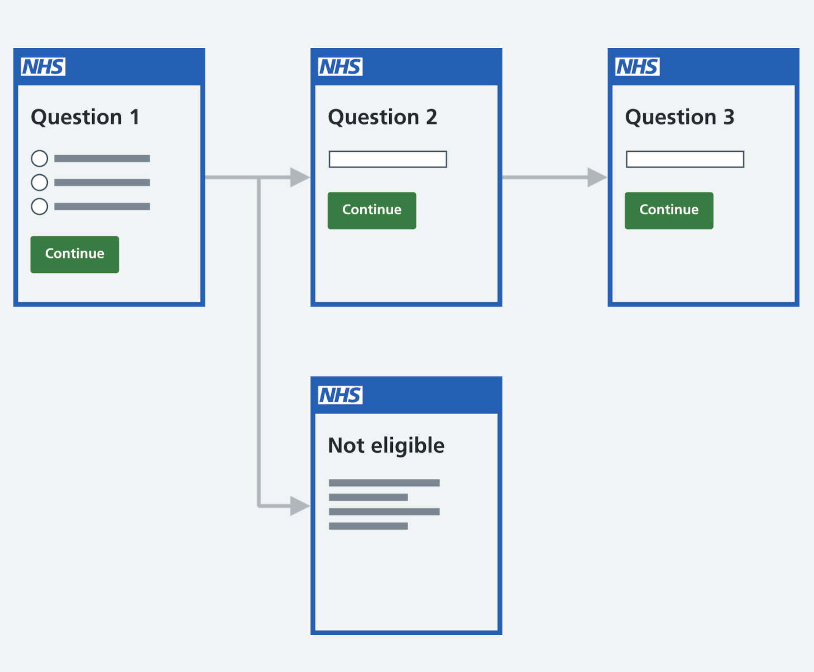
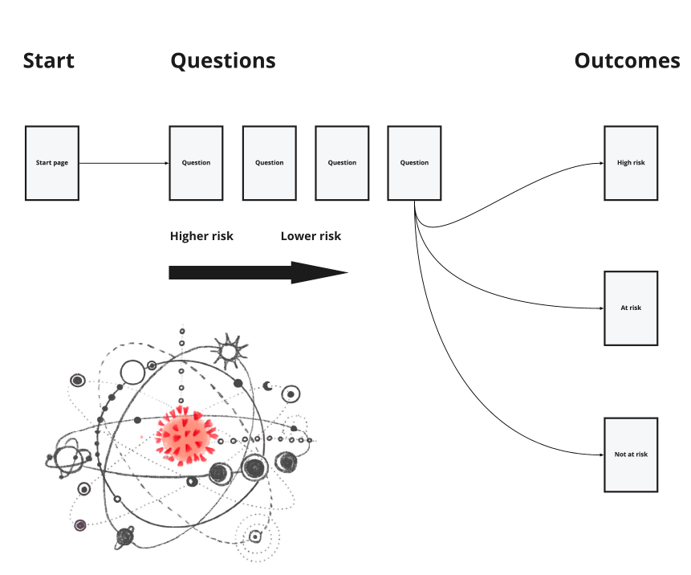
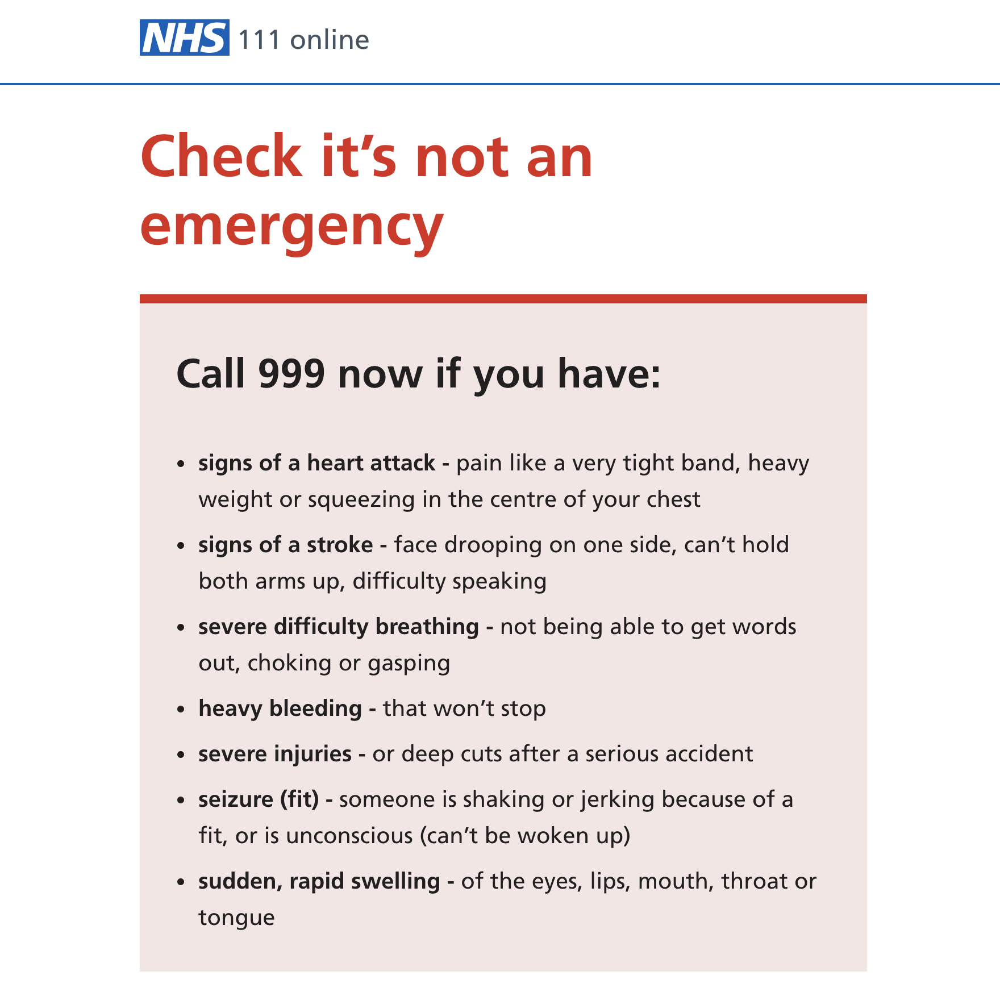
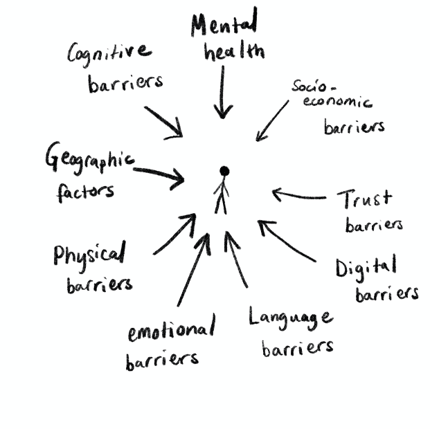

Work case studies
If you would like to see a more in–depth process or hear more about my experience, drop me a line at msakihata@gmail.com

NHS DIGITAL
Redesign of the NHS Service manual and design system
Redesign of the NHS Service manual and design system
test test hum drum test test test hum drum test test test hum drum test test test hum drum test test test hum drum test

How to write good questions
How to write good questions
Usability testing on form design guidance for the NHS Service manual and design system
Impact:
click here for live service

Covid-19 Check your risk tool
Covid-19 Check your risk tool
Triage design and prototyping of tool that directs people to the appropriate NHS.UK Covid-19 guidance based on their health risk from the virus.
Impact:

111 online Mental health triage discovery
111 online Mental health triage discovery
Discovery phase exploratory research into mental health crisis support. Interview and workshopping with stakeholders.
Impact:
click here for live service
Covid-19 contact tracing service
Usability testing on live service to feedback into new service.
Impact: Added a small in size but key design change that had rippling effect on national Covid-19 tracing policy.
click here for live service

Seldom Listened Voices